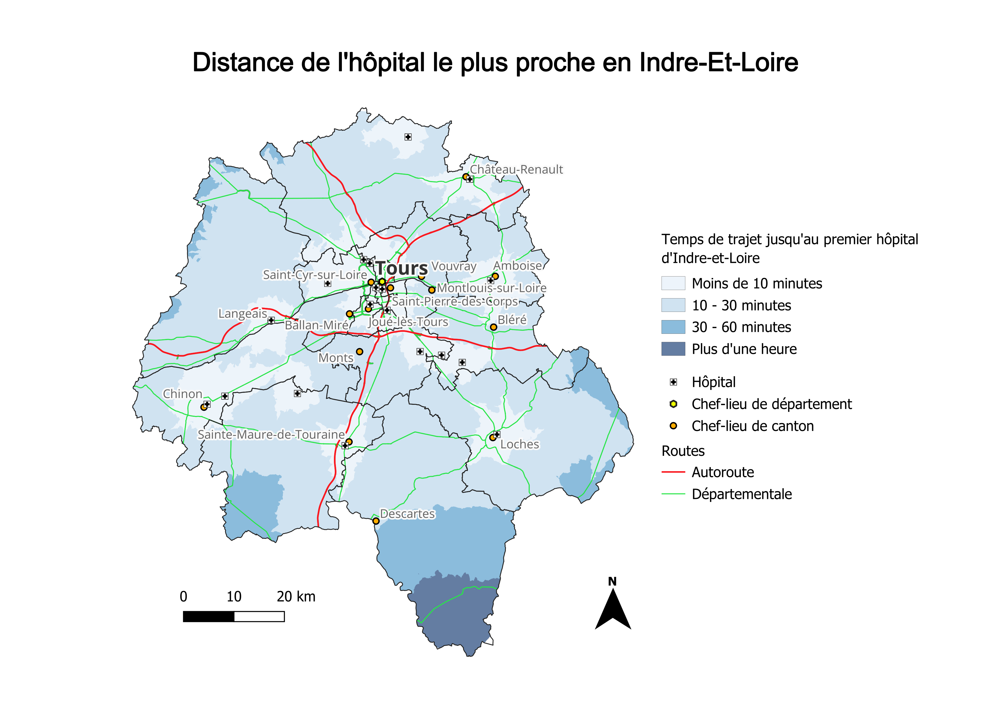

Portfolio Géomatique
Projets réalisés sous QGIS

Analyse de l'emplacement des carrières tourangelles en fonction de la nature des sols.
Les carrières de Touraine sont aujourd'hui toutes à l'abandon, et ont été pour la plupart revalorisées (champignonnières, caves à vin, ...).
À noter : la prépondérance de carrières à tuffeau, plus particulièrement le tuffeau jaune de Touraine, fortement utilisé dans la construction des bâtiments historiques de la région.
Données :
BRGM (Carte géologique)
Géorisques (Cavités souterraines)
Voir le PDF

Analyse du solde naturel, par le biais d'une jointure attributaire des données brutes de naissances et de décès sur l'année 2025.
Source : INSEE
Voir le PDF

Calcul d'isochrones à partir du réseau routier via l'utilisation du module QNEAT3.
La réprésentation présente un léger biais car pour des raisons de simplicité, seuls les hôpitaux de l'Indre-et-Loire ont été considérés dans le calcul. Ainsi, le sud du département paraît plus enclavé qu'il ne l'est réellement.
Données : OpenStreetMap
Voir le PDF

Représentation des contraintes d'épandage sur les parcelles agricoles aux alentours de Ballan-Miré et La Riche (37).
Les
éléments
prise en compte sont indiqués sur le plan.
Les zones à risque de débordement fréquents sont classées TF+ (Aléa Très fort) au PPRI. L'épandage n'y est pas nécessairement interdit mais peut être réglementé selon les périodes de l'année.
Données :
BD TOPO (Routes, Plans et Cours d'eau, Bâtiments),
Géorisques (Zones de débordement fréquent)
Voir le PDF